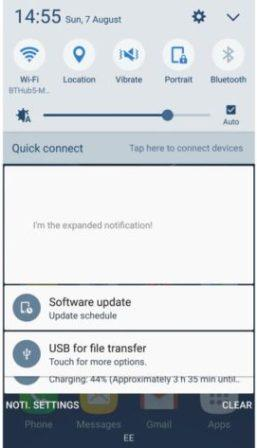
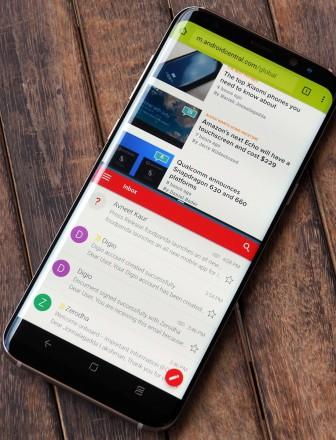
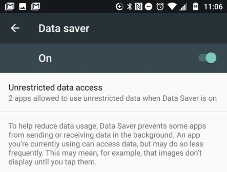
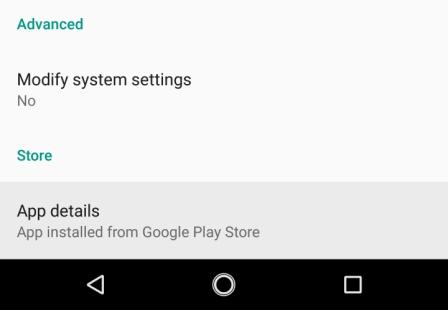

| Android is a Linux-based operating system for mobile devices such as smartphones and tablet computers. It is developed by the Open Handset Alliance led by Google. The Android Open Source Project (AOSP) is led by Google, and is tasked with the maintenance and development of Android. | |
| Enterprise / Developer: | |
| App Store: | Google Play Store |
| Number of applications: | ~ 2.000.000 |
| OS Kernel: | Linux |
| Version: | Android 7.0 Nougat |
| Version release date: | Thursday, September 1, 2016 |
With its features released beforehand, the public enjoyed playing their part in deciding on the operating system name. The name was made official in June 2016.Performance improvement and better battery management due to the Doze on-the-go feature was the crowd puller for this version. Other hallmark features are:-
Since the visual changes are the first ones you'll see as soon as you boot up your Nougat device, the tweaked UI deserves a special mention. Android 7.0 Nougat brings instant control toggles when swiping down from the top of the screen, improving the way you can activate or deactivate Bluetooth, Wi-Fi and more.
The notification menu, meanwhile, gets a cool overhaul that makes better use of available on-screen space, sporting smaller fonts and bundling all notifications from the same app. Moreover, a new Direct Reply feature now enables users to reply to messages faster and easier, straight from notifications, as Google finally enabled the feature for third-party apps as well. Another useful trick is pressing and holding on a notification to access the app's settings, which makes things arguably more convenient.
Google Cardboard is nothing compared to the ambitious Daydream VR, the company's latest platform for virtual reality. Daydream VR pairs VR headsets and controllers with an Android Nougat-based UI designed to facilitate discovery and consumption of VR content. Moreover, Daydream VR will rock an impressively low 20 ms latency, which should translate to the best mobile VR experience yet.
On the downside, Daydream VR will only be compatible with a few new handsets, which means that current devices will most likely not be able to support the platform. Future flagships, however, should have no problem getting the most out of Daydream VR.
Google's new Instant Apps may well be the greatest change to app stores in ages, significantly facilitating access to apps. Instant Apps basically allow Android users to start using an application immediately in the Play Store, without even having to download it. With Android Nougat, you can simply open the Google Play store page for an app and start using it instantly, so you can try it out before deciding whether to download it or not. This could be a real game-changer for how we try out new apps.
Google has always handled multitasking quite proficiently with Android, but Nougat makes everything better. Quick Switch, for instance, will allow users to seamlessly switch to the last used app simply by double-tapping the Recent button.
Speaking of the Recent menu, Android 7.0 Nougat also introduces a new Clear All Button, which was missing from the stock version of Android Marshmallow.
Multi-window makes use of the Recent menu as well, allowing users to easily open an app from another app. More specifically, if you press the Recent button while you're using an app, you'll have the option to select another app to open alongside your current one. Both apps will work simultaneously in a split-screen view. This should significantly improve productivity, especially since you'll be able to drag items from one app to another when both are open in split-screen view.
One of the most commended features of Android 6.0 Marshmallow was Doze, which brought neat battery optimizations to keep devices running for longer on a single charge. Google is now taking things to the next level with Android 7.0 Nougat, introducing "Doze on the Go."
While the Doze in Marshmallow placed devices in a dormant state when not in use, Doze on the Go offers power-saving features even when in motion, whenever the display is off. Another neat feature called Project Svelte, meanwhile, keeps apps from waking up when detecting changes in the device's network connection.
Google has gradually been beefing up the information available in your app settings interface. Nougat added a particularly cool new feature: You can now see where an app came from—Google Play or a sideloaded APK.
To find this bit of info, open your system settings and select “Apps.” Pick any app in the list and scroll down to the bottom of the info screen. It will say either “App installed from Package Installer,” or “App installed from Google Play Store.” For those apps installed via the Play Store, you can tap the embedded link to go right to the app’s listing in the Play Store. The package installer link for sideloaded apps won’t do anything, though.
